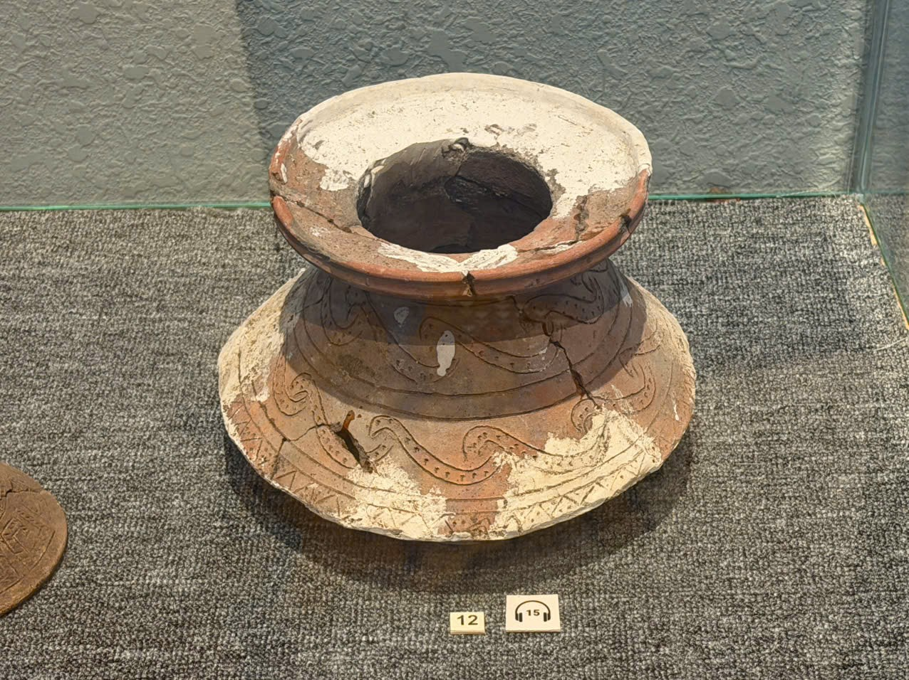

PHOTO-001 · Hồ sơ nháp
Hiện vật gốm loe rộng — vị trí nhãn 12
Mô tả trực quan; chưa có bảng tên đọc được

A01 · Ảnh hiện vật để duyệt làm tham chiếuĐặc điểm nhìn thấy
- Miệng mở lớn và vành dày loe ra ngoài
- Thân thắt ở giữa, phần dưới loe rộng
- Bề mặt nâu, nhiều mảng sáng và đường trang trí uốn cong
Ghi chú cần xác nhận
- Số 12 là nhãn vị trí nhìn thấy trong ảnh, không phải số đăng ký hay artifactId.
Mã bảo tàng, mã hiện vật, tên chính thức, niên đại và xuất xứ trong DB chưa được điền. Chưa index vào AI.